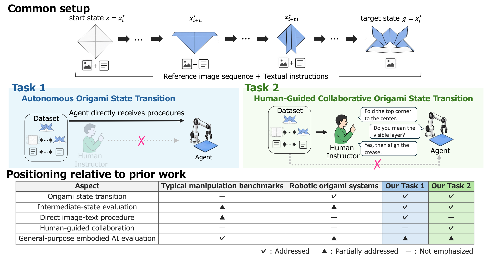
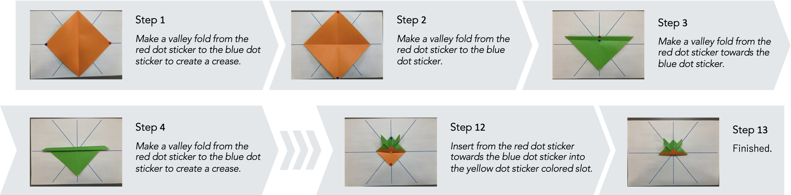
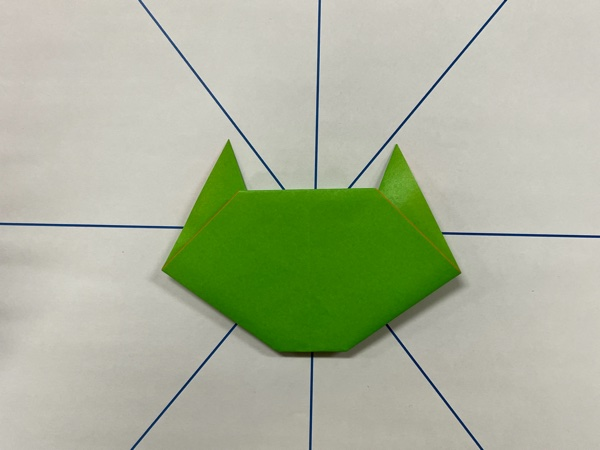
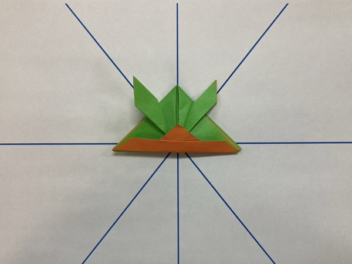
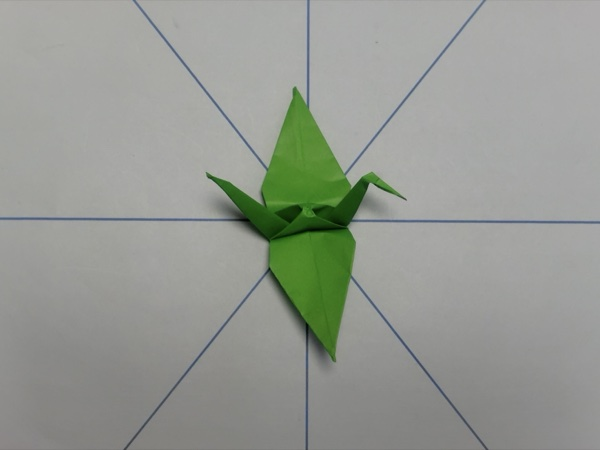
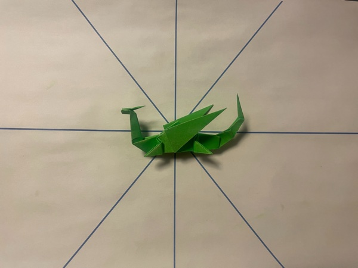

Abstract
General-purpose embodied AI systems are increasingly expected to interpret multimodal instructions and perform fine-grained physical tasks. However, many manipulation benchmarks provide limited support for jointly evaluating procedural correctness, local geometric sensitivity, and human-guided correction. We propose origami as a benchmark based on real images for procedural state-transition reasoning. Origami requires precise operations such as tucking, inserting, reversing, and folding overlapping layers, making it a focused domain for studying physical state transitions. We introduce a dataset of step-by-step folding images, textual entries, and difficulty annotations, and we define two tasks, i.e., autonomous state transitions from multimodal instructions and human-guided collaborative transitions. Unlike crease-pattern- or diagram-based origami benchmarks, the proposed benchmark is grounded in photographs of actual intermediate folding states. In an initial simulator-based evaluation, we use three multimodal LLM controllers to evaluate procedural understanding, action-interface grounding, and retry-based correction.
Dataset
Each origami model is an ordered sequence of photographs of intermediate paper states, from paper preparation to the completed model. For each non-final step, a human-written textual entry describes the operation required to reach the next state; the final step marks completion. Images were captured in a controlled, fiducial-assisted setup, and every transition was checked for foldability, specification conformance, and text quality.

Difficulty levels

Level 1 – Beginner58 models (16.7%)
Level 2 – Elementary131 models (37.6%)
Level 3 – Intermediate144 models (41.4%)
Level 4 – Advanced15 models (4.3%)Tasks
A benchmark instance pairs a start state and a later target state from the same procedure, together with the reference images and textual entries between them.
Task 1: Autonomous Origami State Transition
The agent directly receives the reference image sequence, textual instructions, and target state, and must execute each transition. After a failed attempt it receives fixed feedback and may retry.
Task 2: Human-Guided Collaborative Origami State Transition
The agent has no direct access to the reference procedure. A human instructor who sees the procedure guides it step by step in natural language, answers clarification questions, and gives corrective feedback.
Results
We evaluate three multimodal LLM controllers that operate an origami simulator through structured commands, on all 348 procedures with the same start–target pairs in both tasks.
| Model | Episode-SR | Trans-SR | First-Att-SR | Avg Att/Trans ↓ | Retry-SR |
|---|---|---|---|---|---|
| Task 1 | |||||
| GPT 5.6 Sol | 22.7% | 34.1% | 61.3% | 1.68 | 38.2% |
| Gemma 4 31B | 3.74% | 6.39% | 26.3% | 2.44 | 8.22% |
| Gemma 3 12B IT | 1.72% | 0.758% | 2.77% | 2.93 | 2.56% |
| Task 2 | |||||
| GPT 5.6 Sol | 25.6% | 40.3% | 58.5% | 1.69 | 50.9% |
| Gemma 4 31B | 3.45% | 8.46% | 28.6% | 2.36 | 14.1% |
| Gemma 3 12B IT | 2.87% | 3.03% | 14.3% | 2.69 | 4.79% |
SR: success rate. Episode-SR counts procedure segments completed from the start state to the target state; transition-level metrics diagnose partial progress and retry-based correction. See the paper for definitions and significance tests.
BibTeX
@inproceedings{numaya2026origamitrace,
title = {Origami as a Real-Image Benchmark for Procedural State-Transition Reasoning},
author = {Numaya, Ikumi and Akama, Reina and Yoshida, Kise and Saito, Yuka and
Tsuda, Sumika and Shimizu, Takahiro and Sagara, Miori and Suzuki, Jun},
booktitle = {Advances in Neural Information Processing Systems},
year = {2026}
}